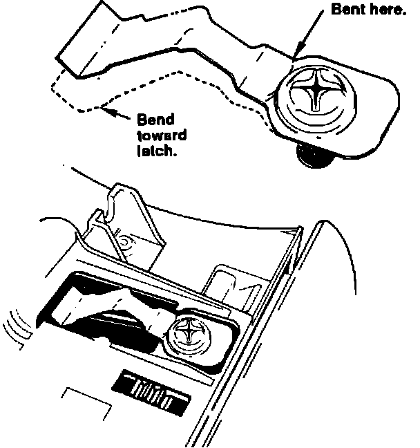

Astray - Will Not Stay Closed
91acura01 January 28, 1991YEAR MODEL
1991 LEGEND
VIN APPLICATION BULLETIN NO
ALL
91-011
Ashtray Won't Stay Closed
SYMPTOM
The ashtray won't stay in when it's pushed closed.
PROBABLE CAUSE
Pulling the ashtray out, instead of pushing it in and letting it come out by itself, deforms the ashtray latch spring.
CORRECTIVE ACTION
Straighten the ashtray latch spring.
1. Remove the center console panel as described in the Body section of the service manual.
2. Remove the four screws that secure the ashtray to the console panel.
3. Turn the ashtray over, then remove the Phillips screw and the latch spring.

4. Straighten the spring (it usually bends near the screw) so that it applies more pressure to the latch.
5. Reinstall the spring. Hold the ashtray upright and level, then check its operation. The spring tension is OK if the ashtray stays in. Remove and re-bend the spring if necessary.
6. Reinstall the ashtray and the center console cover.
WARRANTY CLAIM INFORMATION
In warranty: The normal warranty applies. Out-of-warranty: Any repair performed after warranty expiration may be eligible for goodwill consideration by the District Service Manager. You must request consideration, and get the DSM's decision, before starting work.
Operation number: 841080
Flat rate time: 0.2 hour
Failed P/N: 77730-SP0-A01
Defect code: 002
Contention code: B01